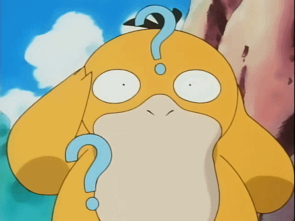

<div class="container">
  <div class="row justify-content-center">
    <ng-container *ngIf="!this.likedPokemonList.length; else showPokemonList">
      <div class="text-center mt-4">
        
        <p class="mt-2">¡Vaya! Parece que no has dado like a ningún pokémon. Ve a <span routerLink="/swipe" id="link-to-swipes" class="text-danger">swipes</span> y comienza tu aventura!</p>
      </div>
    </ng-container>
    <ng-template #showPokemonList>
      <div (click)="resetSwipes()" id="reset-swipes" class="text-center pt-3">Reiniciar likes</div>
      <div class="col-3 liked-pokemon-list pt-2">
        <div *ngFor="let pokemon of likedPokemonList; let i = index">
          <div [ngClass]="i % 2 === 0 ? 'even-line' : 'odd-line'" class="text-capitalize">
            {{ pokemon.name }}  
          </div>
        </div>
      </div>
    </ng-template>
  </div>
</div>
